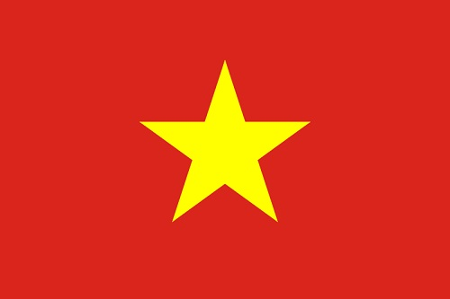

ทำความรู้จักประเทศเวียดนามกันก่อน!
ทำความรู้จักประเทศเวียดนามกันก่อน!
ประเทศเวียดนาม

Flag of Vietnam
ประเทศเวียดนาม มีชื่ออย่างเป็นทางการคือ สาธารณรัฐสังคมนิยมเวียดนาม
เป็นอีกประเทศหนึ่งในเอเชียตะวันออกเฉียงใต้ ตั้งอยู่ทางด้านตะวันออกสุดของคาบสมุทรอินโดจีน
มีพรมแดนติดกับประเทศจีน ทางทิศเหนือประเทศลาว และ ประเทศกัมพูชาทางทิศตะวันตก และ อ่าวตังเกี๋ย
ทะเลจีนใต้ ทางทิศตะวันออกและทิศใต้ หรือในภาษาเวียดนามเรียกเฉพาะทะเลว่า ทะเลตะวันออก
เวียดนามมีประชากรมากกว่า 89 ล้านคน ถือเป็นประเทศที่มีประชากรมากที่สุดเป็นอันดับ 13 ของโลก
Coat of arms of Vietnam
ภูมิศาสตร์ เวียดนามเป็นประเทศที่มีลักษณะเป็นแนวยาว และ มีภูมิประเทศเป็นภูเขาสูงกั้นระหว่างที่ราบลุ่มแม่น้ำที่อุดมสมบูรณ์ทางตอนเหนือและใต้ แต่มีภูเขาที่มีป่าหนาทึบแค่ 20% โดยมีพันธุ์ไม้ 13,000 ชนิด และพันธุ์สัตว์กว่า 15,000
ลักษณะภูมิประเทศ มีที่ราบลุ่มแม่น้ำขนาดใหญ่ 2 ตอน คือ ตอนเหนือเป็นที่ราบลุ่มแม่น้ำแดง และตอนใต้เป็นที่ราบลุ่มแม่น้ำโขง มีที่ราบสูงตอนเหนือของประเทศ และยังเป็นภูมิภาคที่มีเขา ซึ่งเป็นภูเขาที่สูง 3,143 เมตร (10,312 ฟุต) ตั้งอยู่ในเป็นยอดเขาที่สูงที่สุดในอินโดจีน
ลักษณะภูมิอากาศ เป็นแบบมรสุมเขตร้อน ชายฝั่งทะเลด้านตะวันออกเปิดโล่งรับลมมรสุมตะวันออกเฉียงเหนือที่พัดผ่านทะเลจีนใต้ ทำให้มีโอกาสรับลมมรสุมและพายุหมุนเขตร้อน จึงมีฝนตกชุกในฤดูหนาว สามารถปลูกข้าวได้ปีละ 2 ครั้ง (ฝนตกตลอดปี ได้รับอิทธิพลจากลมมรสุมตะวันออกเฉียงเหนือ)
เป็นประเทศที่มีความชื้นประมาณร้อยละ 84 ตลอดปี มีปริมาณฝนจาก 120 ถึง 300 เซนติเมตร และมีอุณหภูมิเฉลี่ยตั้งแต่ 5 องศาเซลเซียส